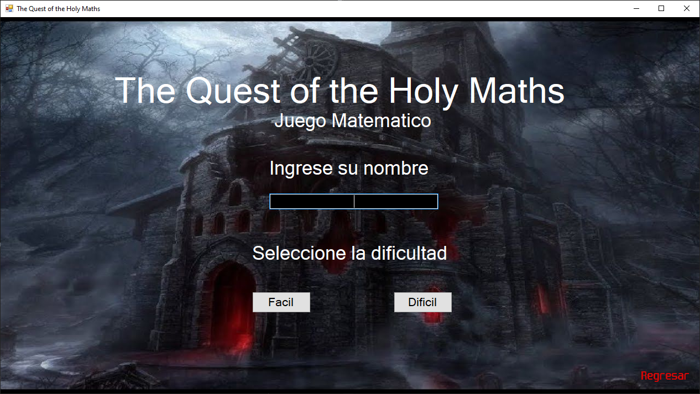
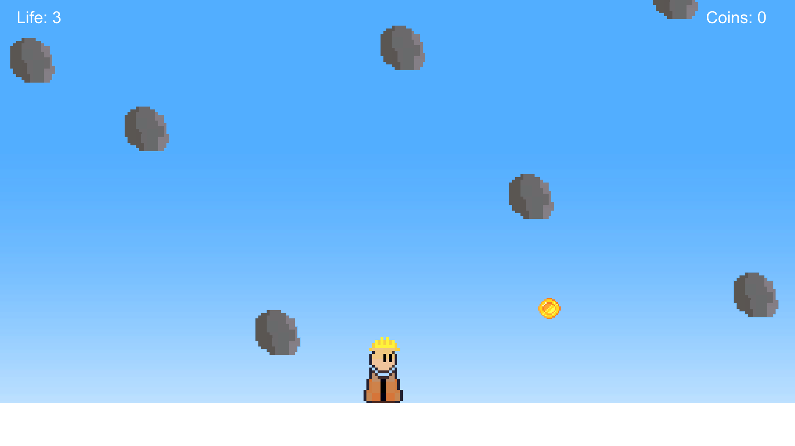
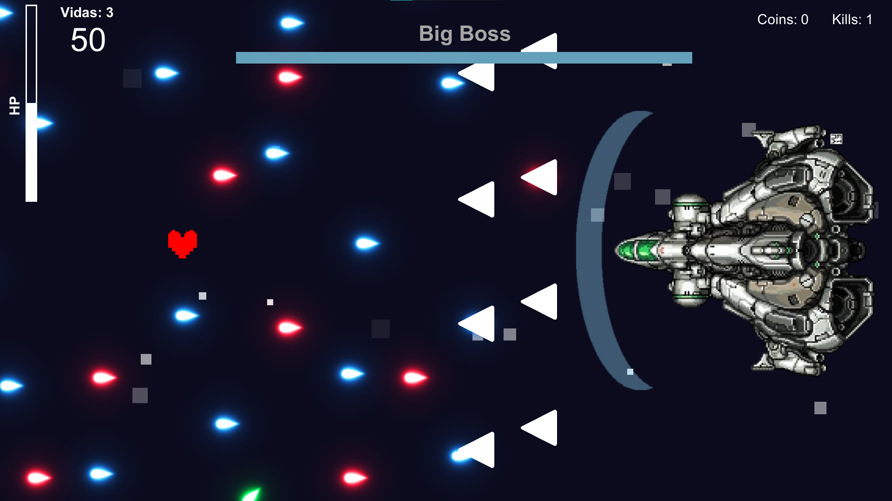
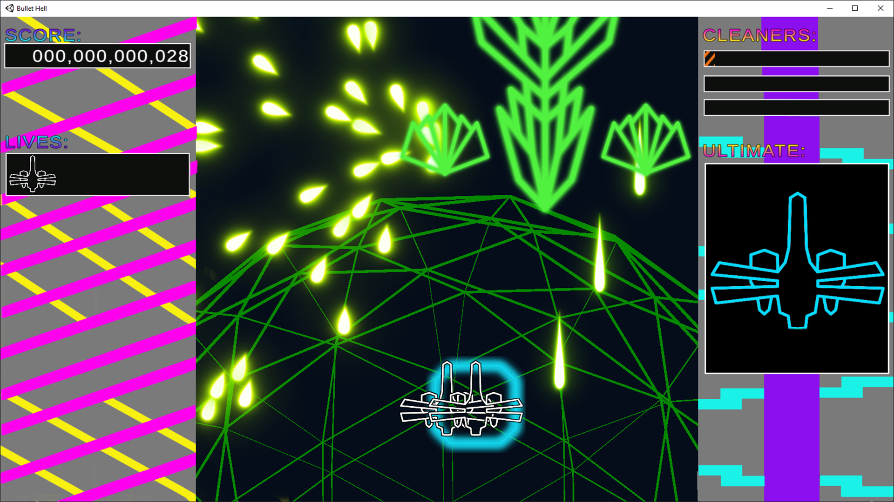
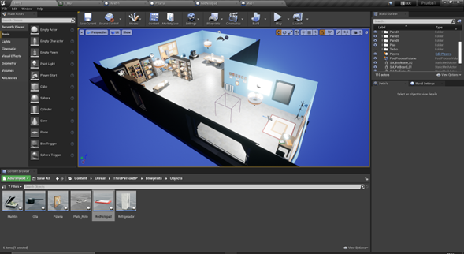
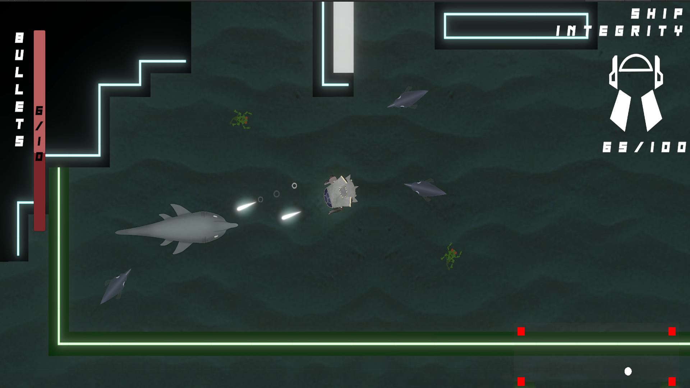
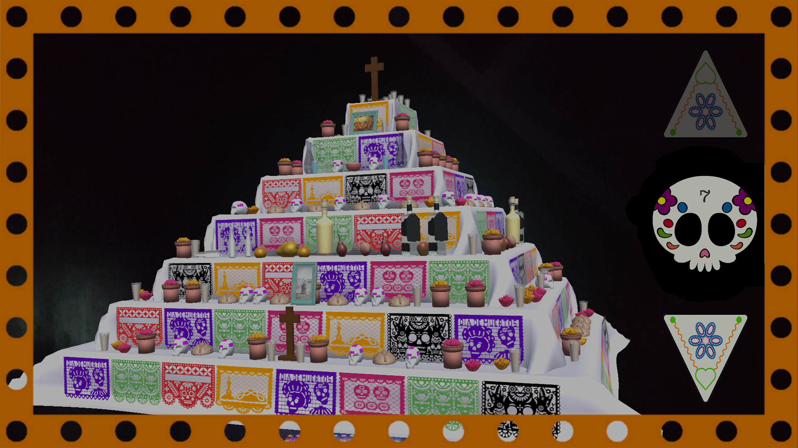
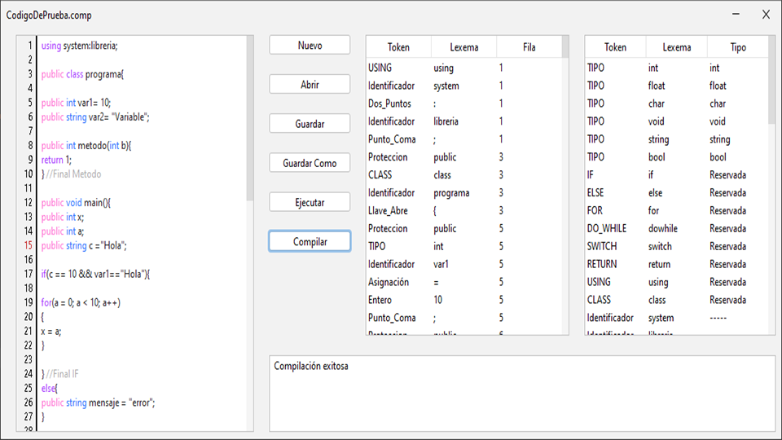

|
Games

The Quest of The Holy Maths (06/2021)El primer juego que realizamos en un motor con interfaz gráfica, era un juego matematico en el que mientras más respuestas tuviera el jugador, más lejos llegaba, hasta que llegaba a la sala del jefe final. Contabas con un agradable cuervo acompañante, algunos dicen que tambien se aventuró a este castillo hace tiempo, pero que fallo en su travesia.

Falling Rocks (09/2021)Primer proyecto terminado en Unity, juego hecho con el objetivo de aprender a utilizar los inputs de movimiento que ofrece Unity, además de otras herramientas como cambio de arte, sonidos por colisión, programación orientada a objetos, etc. Cuida tu cabeza a la vez que recoges monedas y cascos adicionales. Será mejor que una de esas pesadas piedras no golpee tu cabeza si no llevas puesto el casco...

Asteroids & Bullet Hell (11/2021)Proyecto final de un taller, la idea principal era solo añadir un jefe final, pero decidimos añadir elementos de Bullet Hell a la pelea, más que nada para aumentar artificialmente la dificultad de la pelea, y para experimentar más con los sistemas de instanciación. Vive un autentico infierno de balas a la vez que tratas de derrotar a un poderoso enemigo frente a ti, los reflejos son algo funamental si buscas la victoria.

Justsome BulletHell (03/2022)Proyecto impulsado por la anterior entrega, un Bullet Hell con todas las letras, explota, ataca e infecta a todo lo que se te ponga enfrente, a la vez que intentas evitar todo el desastre que se forma en pantalla con el afán de eliminarte, aprovecha tu alta movilidad y tu rapido ataque para sobrevivir en todos los dispositivos que deseas infectar, mantente alerta de esos peligrosos "Antivirus", te aseguro que no será facile escapar de ellos.

Prototipo de Juego con IA (06/2022)Primer prototipo hecho en Unreal Engine 4, nuestro primer acercamiento con este motor y su programación mediante blueprints. Basado principalmente en la experimentación con el diseño de entornos 3D, a la vez obtuvimos las primeras experiencias con Inteligencias Artificiales

Deep Below (06/2022)Juego Roguelike con elementos de Tower Defense ambientado en las profundidades del oceano de un planeta desconocido, ocupate de las molestas criaturas que intentaran hundirte a la vez que proteges los generadores que mantienen activa a la ciudadela. Mejora tus herramientas y llega más lejos que la ultima vez. Eres la ultima esperanza de los tuyos, mejor no decepcionarlos.

Aplicación de Realidad Aumentada (11/2022)Fue un encargo por parte de los directivos de la facultad de Ingenieria en Videojuegos, encargada para el festival "Vida y Muerte" celebrada por la universidad. Es una aplicación en que el usuario puede ver los detalles de cada piso del altar junto a un audio explicativo del mismo, y puede revisar individualmente cada nivel o recibir una explicación de la celebración y acerca del significado del altar.

Compilador (12/2022)Compilador hecho desde 0, que tiene como base las funcionalidades regulares de los compiladores más populares, con la adición de caracteristicas que funcionan como guia de aprendizaje sobre cada una de las fases relacionadas al funcionamiento de un compilador. |
|---|